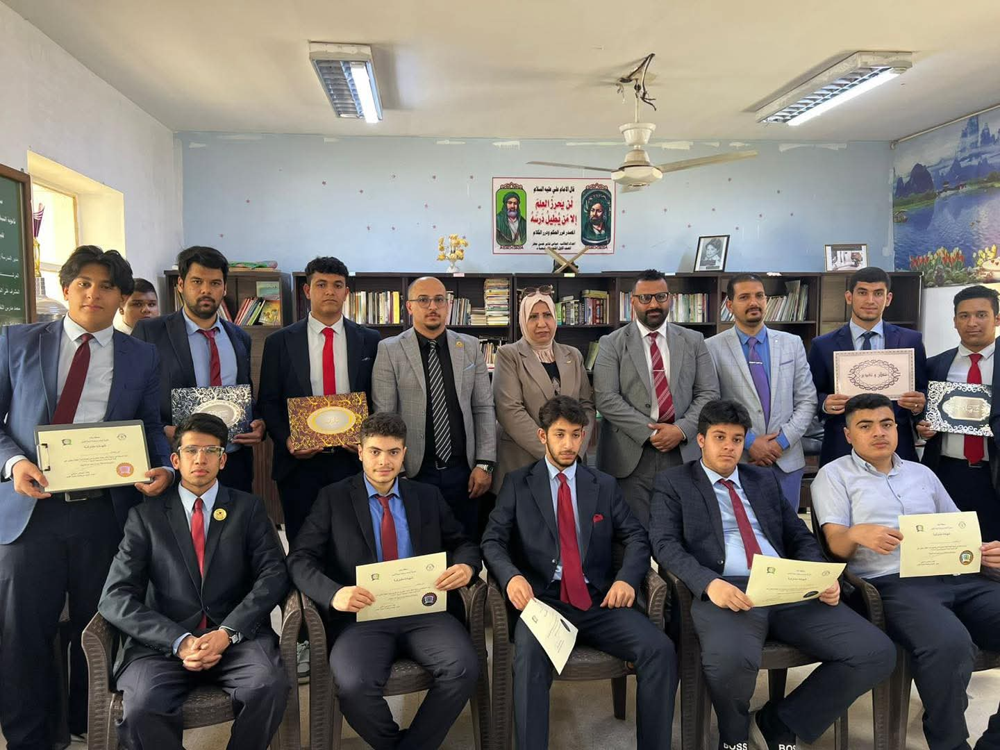

معارض الحاسوب
طلابنا يبدعون في عالم الابتكارات
في خطوة تعكس روح الإبداع والتميز، شارك عدد من طلاب ثانوية النبلاء النموذجية في معرض الابتكار الإلكتروني، مقدمين مشاريع مبتكرة شملت أنظمة ذكية وتطبيقات تقنية تخدم المجتمع. نالت هذه الأعمال استحسان الجميع لما أظهرته من مهارات عالية في التصميم والبرمجة.
شاركت ثانوية النبلاء في عدة معارض وحصدت المركز الأول للعام الدراسي 2024/2025 بإشراف الأستاذ سجاد، مؤكدة ريادة مدرستنا تقنياً.
شاركت ثانوية النبلاء في عدة معارض وحصدت المركز الأول للعام الدراسي 2024/2025 بإشراف الأستاذ سجاد، مؤكدة ريادة مدرستنا تقنياً.
مسابقات الرياضيات
أقامت ثانوية النبلاء عدة مسابقات للرياضيات لغرض الكشف عن إبداع الطلاب خارج روتين الامتحانات، حيث أقام الأستاذ علي جبر مسابقات تفاعلية بحضور إدارة وإعلام المدرسة ولجنة الرياضيات المتخصصة، لتعزيز التفكير المنطقي لدى الطلاب.

مسابقة اللغة الإنكليزية
لتعزيز مهارات التحدث واللغة، أقامت الثانوية مسابقة داخلية متميزة شهدت حضور السيدة نادية سعد نعمة، مسؤولة شعبة الثقافة والفنون في مديرية الشباب والرياضة، مما أضفى طابعاً رسمياً وتنافسياً كبيراً بين الطلبة.
إعلام ثانوية النبلاء
إعلام ثانوية النبلاء